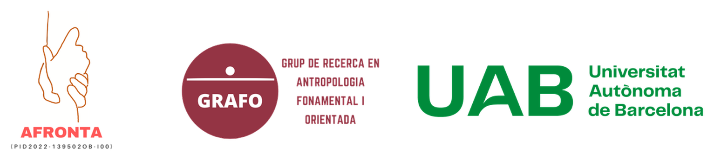

Unidad 6. Cierre y evaluación final
6.1 Evaluación final
Según la ley estatal (LO 1/2004), la violencia de género es la ejercida:
Esa es la definición legal estatal. La violencia intrafamiliar es un concepto más amplio, y la Ley 5/2008 contempla más ámbitos.
Una señal aislada, como un moratón sin explicación:
Las señales sirven para abrir la conversación, no para sacar conclusiones.
Los niños y niñas que presencian violencia contra su madre:
Presenciar la violencia daña, y la normativa los reconoce como víctimas.
Ante una conducta que no entiendes, lo más adecuado es:
Comprender antes de juzgar evita añadir vulnerabilidad. Comprender no es justificar.
¿Conviene reunir a la mujer y a su pareja para mediar?
Puede aumentar el riesgo y reforzar el control.
Ante un peligro inmediato, el recurso adecuado es:
El 112 atiende emergencias las 24 horas.
6.2 Diploma de participación
Escribe tu nombre para generar un diploma que puedes guardar como PDF o imprimir. El nombre no se guarda ni se envía a ningún sitio. El diploma está disponible cuando hayas completado las unidades 0 a 5 y respondido las preguntas de la evaluación final.

Diploma de participación
Se hace constar que
ha realizado el recurso formativo «Mirar, nombrar, acompañar. Prevención de la violencia intrafamiliar y de género», con una duración aproximada de 2 horas.
Proyecto AFRONTA (PID2022-139502OB-I00), grupo GRAFO, UAB. Documento de carácter divulgativo, sin validez académica oficial.
6.3 Cómo citar este recurso
Equipo AFRONTA (2026). Mirar, nombrar, acompañar. Prevención de la violencia intrafamiliar y de género. Proyecto AFRONTA (PID2022-139502OB-I00), GRAFO, Universitat Autònoma de Barcelona. Licencia CC BY-NC-ND 4.0.
Lo esencial
- Reconoce, nombra y acompaña: sin juzgar y sin diagnosticar.
- Comprender el contexto de cada persona no justifica ninguna violencia.
- Conoce los recursos: 112, 016 y 900 900 120.
Progreso guardado en este navegador. Volver al índice
Referencias
- Referencias de las unidades 1 a 5 en cada una de ellas.
- Los números de ayuda proceden de la Delegación del Gobierno contra la Violencia de Género y de la Generalitat de Catalunya.